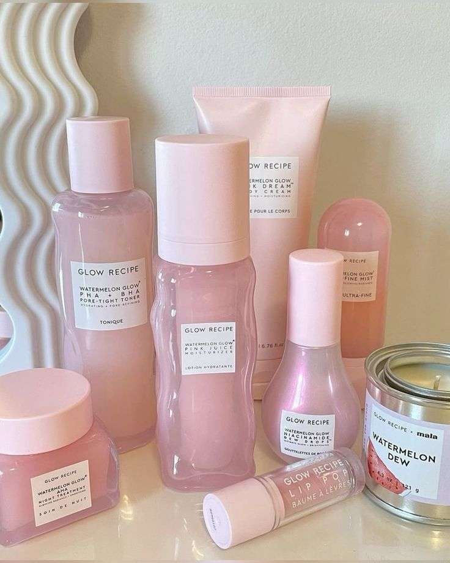

Para empezar a cuidar tu rostro es fundamental tener alguna rutina diaria con pasos basicos, de forma que tu rostro este limpio, hidratado y protegido durante el dia. Lo que con el tiempo se convertira en una piel cuidada con buen aspecto.
Rutina diaria segun tu tipo de piel
Rutina basica para pieles normales a secas
- 1- Limpiador facial o emulsion para este tipo de pieles
- 2- Crema hidratante
- 3- Protector solar para rostro (solo de dia)
Rutina basica para pieles mixtas a grasas
- 1- Limpiador facial en gel
- 2- Crema hidratante en gel (ideal para este tipo de pieles)
- 3- Protector solar para rostro efecto matte/seco (solo de dia)